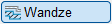
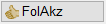
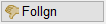
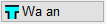
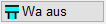
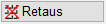
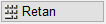
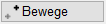
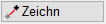

")
Folienbelegung: Wenn AutFol und Follgn eingestellt sind, werden die Elemente in Folie 0 abgelegt.
Konstruieren und Bearbeiten von Wänden.
Mit dieser Funktion können nicht nur Wände im engeren Sinn gezeichnet werden, sondern alle Geometrien, die aus mehreren parallelen Linien bestehen.
Funktionen |
Beschreibung |
|---|---|
Wände zeichnen. |
|
Wandaufbau definieren. |
Optionen |
Beschreibung |
|---|---|
Wandaufbau 0.24 |
Aktuelle Einstellung für den Wandaufbau. Kann über [Defini] geändert werden. |
  |
Folienzuweisung: FolAkz: Die Linien werden in genau die Folie gezeichnet, die in der Wanddefinition [Defini] angegeben ist. Follgn: Alle Linien werden, unabhängig von den Folien der Definition, in die aktuelle Folie gelegt. Das ist bei eingestellter „automatischer Folienbelegung“ die Folie 0. Nur in Ausnahmefällen sollten Sie eine spezielle Folie als aktuelle Folie setzen. |
  |
Berücksichtigung der Anschlusslinien: Wa an: Jeweils am Anfang und am Ende eines Polygonzugs werden die Anschlusslinien gelöscht. Wa aus: Am Beginn und Ende eines Innenwandpolygons werden die Anschlusslinien nicht gelöscht, z. B. wenn nicht tragende Innenwände trocken zwischen die Außenwände gemauert werden. |
  |
Ein-/ Ausschalten des Differenzmodus. Der aktuelle Modus ist durch die aktive Schaltfläche gekennzeichnet. |
  |
Wechseln zwischen Zeichenmarke bewegen und Zeichnen. Der aktuelle Modus ist durch die aktive Schaltfläche gekennzeichnet. (Nur bei aktivierter Richtungslogik). Wenn Sie Wände "ohne Richtungslogik" zeichnen möchten, müssen Sie den Zeichenmodus in den Systemdaten einschalten: [Option | SysDat | Konstruktionsprogramm → Linien ohne Richtungslogik zeichnen]. |